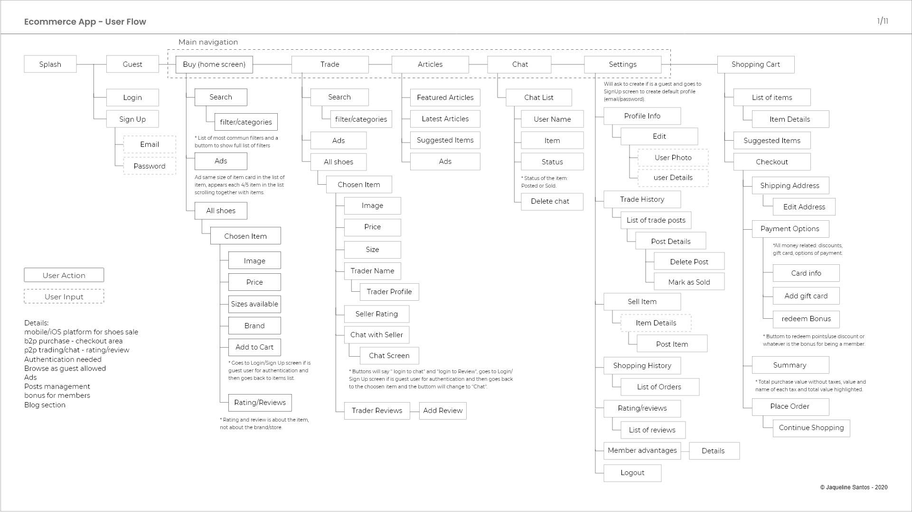
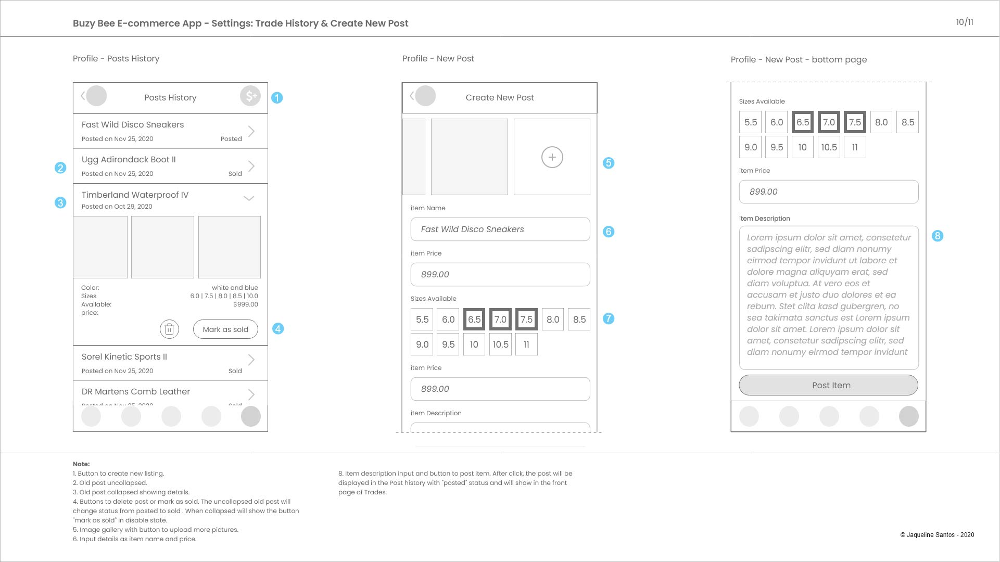
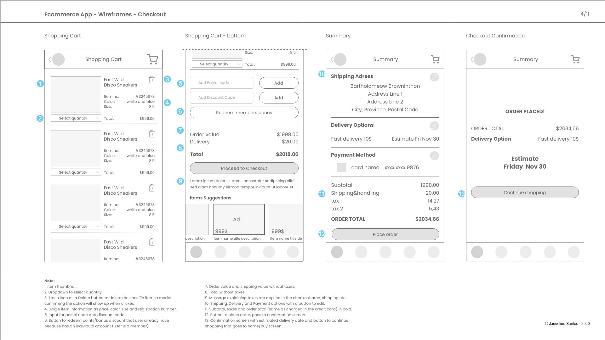

Mobile App for Selling and Trending
This was an exercise to build a mobile app userflow and low fidelity wireframes for a mobile application with focus in good practices in content management and usability.
Mobile application main features:
Purchase of new items
Allows the common user to contact through chat to negotiate used items
other users' evaluations about the trader
These pages are part of documentation for a UX study exercise for the Web & Mobile Design and Development post graduation course at Langara College, 2020.
Please contact me to talk more about this project or you can go back to Home to see my other projects.